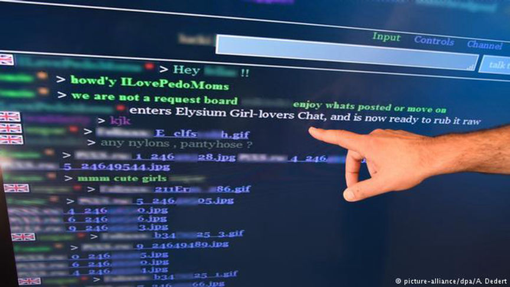
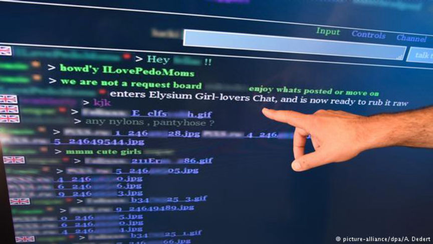

Four Germans Charged for Operating Elysium
The Public Prosecutor’s office in Frankfurt has charged four men for running the now-defunct darknet child abuse forum “Elysium.” All four have been charged for administration, development, and moderation of the forum. That have also been charged for distributing child abuse material. And one has been charged for physically abusing two children while holding an administrative position on the forum.

It is still unclear if any of the four men had any role in the forum’s ownership. I am planning on reaching out to my source in a few hours for more information. The German Federal Criminal Police Office, via Twitter, has called the men “four operators of the platform…” Like many arrests and announcements, the authorities have likely over-emphasized the importance of the roles played by the arrested individuals, but information is scarce.
Three of the four defendants have been sentenced to seven years in prison, 12 years in prison, and 14 years in prison. The last defendant has not yet been sentenced. The men lived in the German States of Hesse, Bavaria and Baden-Württemberg. Ages 40, 57, 58, and 62.
According to the BKA, the police arrested all four men last year with some of the first few Elysium members. Their status as operators and administrators was only recently revealed. More information later. The BKA’s Twitter feed is actively posting updates.

Elysium
It is still unclear if any of the four men had any role in the forum’s ownership. I am planning on reaching out to my source in a few hours for more information. The German Federal Criminal Police Office, via Twitter, has called the men “four operators of the platform…” Like many arrests and announcements, the authorities have likely over-emphasized the importance of the roles played by the arrested individuals, but information is scarce.
Three of the four defendants have been sentenced to seven years in prison, 12 years in prison, and 14 years in prison. The last defendant has not yet been sentenced. The men lived in the German States of Hesse, Bavaria and Baden-Württemberg. Ages 40, 57, 58, and 62.
According to the BKA, the police arrested all four men last year with some of the first few Elysium members. Their status as operators and administrators was only recently revealed. More information later. The BKA’s Twitter feed is actively posting updates.